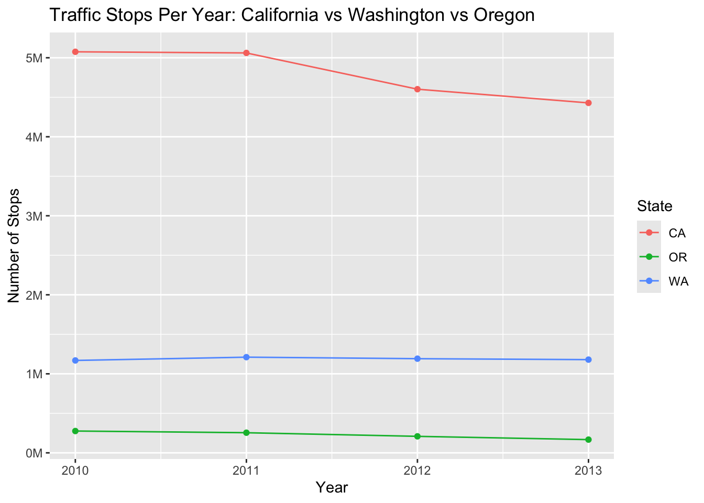
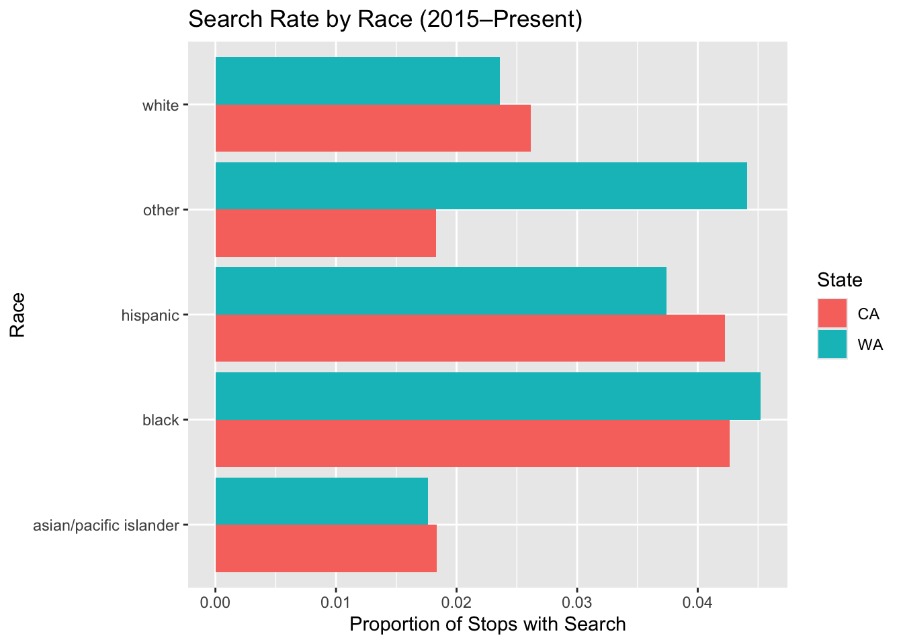
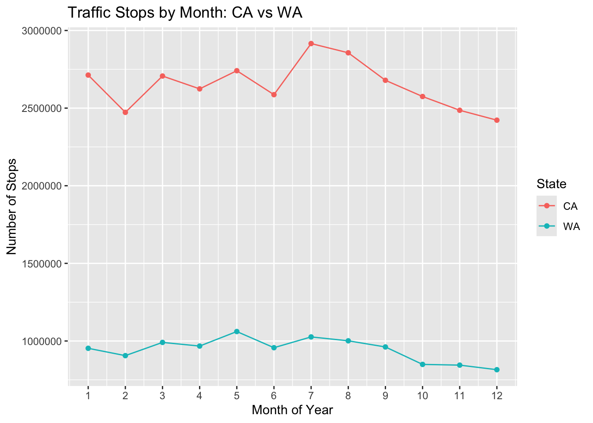

[1] "ar_little_rock_2020_04_01" "az_gilbert_2020_04_01"
[3] "az_mesa_2023_01_26" "az_statewide_2020_04_01"
[5] "ca_anaheim_2020_04_01" "ca_bakersfield_2020_04_01"
[7] "ca_long_beach_2020_04_01" "ca_los_angeles_2020_04_01"
[9] "ca_oakland_2020_04_01" "ca_san_bernardino_2020_04_01"
[11] "ca_san_diego_2020_04_01" "ca_san_francisco_2020_04_01"
[13] "ca_san_jose_2020_04_01" "ca_santa_ana_2020_04_01"
[15] "ca_statewide_2023_01_26" "ca_stockton_2020_04_01"
[17] "co_aurora_2023_01_26" "co_denver_2020_04_01"
[19] "co_statewide_2020_04_01" "ct_hartford_2020_04_01"
[21] "ct_statewide_2020_04_01" "fl_saint_petersburg_2020_04_01"
[23] "fl_statewide_2020_04_01" "fl_tampa_2020_04_01"
[25] "ga_statewide_2020_04_01" "ia_statewide_2020_04_01"
[27] "id_idaho_falls_2020_04_01" "il_chicago_2023_01_26"
[29] "il_statewide_2020_04_01" "in_fort_wayne_2020_04_01"
[31] "ks_wichita_2023_01_26" "ky_louisville_2023_01_26"
[33] "ky_owensboro_2020_04_01" "la_new_orleans_2020_04_01"
[35] "ma_statewide_2020_04_01" "md_baltimore_2020_04_01"
[37] "md_statewide_2020_04_01" "mi_statewide_2020_04_01"
[39] "mn_saint_paul_2020_04_01" "mo_statewide_2020_04_01"
[41] "ms_statewide_2020_04_01" "mt_statewide_2023_01_26"
[43] "nc_charlotte_2020_04_01" "nc_durham_2020_04_01"
[45] "nc_fayetteville_2020_04_01" "nc_greensboro_2020_04_01"
[47] "nc_raleigh_2020_04_01" "nc_statewide_2020_04_01"
[49] "nc_winston_salem_2020_04_01" "nd_grand_forks_2020_04_01"
[51] "nd_statewide_2020_04_01" "ne_statewide_2020_04_01"
[53] "nh_statewide_2020_04_01" "nj_camden_2020_04_01"
[55] "nj_statewide_2020_04_01" "nv_henderson_2020_04_01"
[57] "nv_statewide_2020_04_01" "ny_albany_2020_04_01"
[59] "ny_statewide_2020_04_01" "oh_cincinnati_2020_04_01"
[61] "oh_columbus_2020_04_01" "oh_statewide_2020_04_01"
[63] "ok_oklahoma_city_2023_01_26" "ok_tulsa_2020_04_01"
[65] "or_statewide_2020_04_01" "pa_philadelphia_2020_04_01"
[67] "ri_statewide_2020_04_01" "sc_statewide_2020_04_01"
[69] "sd_statewide_2020_04_01" "tn_nashville_2020_04_01"
[71] "tn_statewide_2020_04_01" "tx_arlington_2020_04_01"
[73] "tx_austin_2020_04_01" "tx_garland_2020_04_01"
[75] "tx_houston_2023_01_26" "tx_lubbock_2020_04_01"
[77] "tx_plano_2020_04_01" "tx_san_antonio_2023_01_26"
[79] "tx_statewide_2020_04_01" "va_statewide_2020_04_01"
[81] "vt_burlington_2023_01_26" "vt_statewide_2020_04_01"
[83] "wa_seattle_2020_04_01" "wa_statewide_2020_04_01"
[85] "wa_tacoma_2020_04_01" "wi_madison_2023_01_26"
[87] "wi_statewide_2020_04_01" "wy_statewide_2020_04_01" sql traffic stops
project 5 - sql traffic stops: california vs washington
Introduction
In this project I compare traffic stops in California, Washington, and Oregon using data from the Stanford Open Policing Project. I focus on three questions: (1) how the number of stops has changed over time in each state, (2) how often searches occur for different racial groups, and (3) whether searches for different racial groups are equally likely to find contraband (hit rates) in each state. All data wrangling is done using SQL; R is used only for visualization and formatting.
Setup and SQL Connection
Analysis 1

Overall, California has many more traffic stops than Washington and Oregon each year. California has over five million stops annually in this period, while Washington has around one million and Oregon has fewer than half a million. California experiences a noticeable decline in stops after 2011, while Washington and Oregon remain relatively stable across 2010–2013.
These patterns could reflect differences in enforcement strategies, driving behavior, or recordingpractices across states. Because each state varies in how and when they began contributing data, some of the differences in trends may arise from the availability and completeness of the data itself rather than only real-world changes in policing.
Analysis 2

This figure shows the proportion of stops that involve a search by race for California and Washington since 2015. In both states, Black and Hispanic drivers are searched at higher rates than white and Asian/Pacific Islander drivers. Washington tends to have slightly higher search rates across most racial groups than California. These differences suggest that search practices are not experienced equally across racial groups or across states.
Analysis 3

This plot compares the number of stops by month for California and Washington. Both states show more traffic stops in the summer months and fewer in the winter, but California has far more stops overall in every month. The similar seasonal pattern suggests that factors like weather, travel, or enforcement cycles affect both states in roughly the same way, even though the total volume of stops is very different.
Conclusion
In this project, I used SQL to wrangle traffic stop data from California, Washington, and Oregon in order to compare patterns over time, across races, and across the calendar year. The first analysis showed that California has far more traffic stops than Washington and Oregon, as Washington and Oregon remain relatively stable across 2010–2013. The second analysis found that Black and Hispanic drivers are searched at higher rates than white and Asian/Pacific Islander drivers in both states, with Washington generally having slightly higher search rates overall. Finally, the third analysis showed that both states have more stops in summer and fewer in winter, suggesting similar seasonal dynamics despite very different total volumes. Together, these results illustrate how SQL can be used to explore large policing datasets and highlight differences in traffic stop practices across states and groups.
Source
Data used in this project come from the Stanford Open Policing Project: https://openpolicing.stanford.edu/data/
Pierson, Emma, Camelia Simoiu, Jan Overgoor, Sam Corbett-Davies, Daniel Jenson, Amy Shoemaker, Vignesh Ramachandran, et al. 2020. “A Large-Scale Analysis of Racial Disparities in Police Stops Across the United States.” Nature Human Behaviour, 1–10.